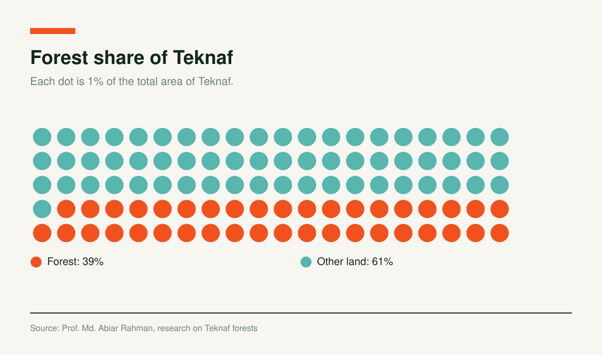
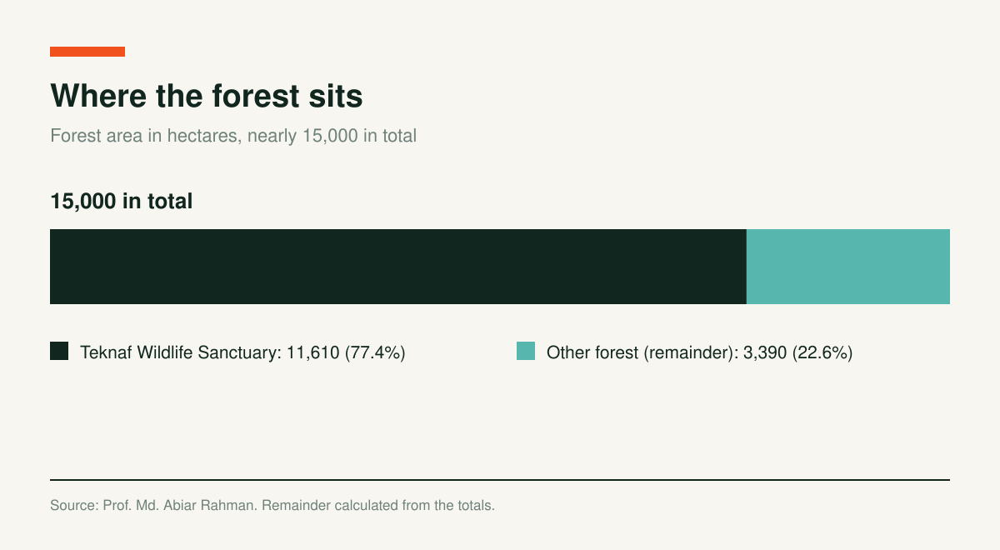

Water Crisis Hits Teknaf Farmers as Hill Streams Dry Up

On the early winter morning of 23 December, Nadir Hossain and his wife Sakina Begum stood in their small plot of land, watering their newly planted chili saplings. The sun was out, and the leaves of the plants were green, but the couple's faces showed exhaustion and worry. Nadir, a 60-year old farmer from the remote village of Uluchamari in Teknaf’s Hnila Union, had witnessed the water crisis in his area worsen over the years, and this season was proving to be the worst yet.
“We’ve just planted the chili saplings. It will take until February for them to bear fruit. But there’s already no water in the stream,” Nadir said, his voice tinged with a deep sigh of resignation. “We’ve dug a small well in the stream bed to extract some water, but even that is drying up fast. It feels like my crops will wither due to the lack of water.”
When Nadir pointed towards the hill stream flowing beside his farm, the change was very apparent. He said, “Around ten years ago, the water flow in this stream was constant all year
round. We never had a problem of water, even during the hottest summer months. But the stream has now
completely dried up, and we are struggling to get water, even after digging wells. If this trend persists, I may be forced to stop farming,” he said, his face filled with disappointment.

On the early winter morning of 23 December, Nadir Hossain and his wife Sakina Begum stood in their small plot of land, watering their newly planted chili saplings. The sun was out, and the leaves of the plants were green, but the couple's faces showed exhaustion and worry. Nadir, a 60-year old farmer from the remote village of Uluchamari in Teknaf’s Hnila Union, had witnessed the water crisis in his area worsen over the years, and this season was proving to be the worst yet.
“We’ve just planted the chili saplings. It will take until February for them to bear fruit. But there’s already no water in the stream,” Nadir said, his voice tinged with a deep sigh of resignation. “We’ve dug a small well in the stream bed to extract some water, but even that is drying up fast. It feels like my crops will wither due to the lack of water.”
When Nadir pointed towards the hill stream flowing beside his farm, the change was very apparent. He said, “Around ten years ago, the water flow in this stream was constant all year
round. We never had a problem of water, even during the hottest summer months. But the stream has now
completely dried up, and we are struggling to get water, even after digging wells. If this trend persists, I may be forced to stop farming,” he said, his face filled with disappointment.
Nadir Ahmed working in his chili field near a hillstream at the foot of the Teknaf Hill. Photo: Mizanur Rahman.
The hill stream in Teknaf, once a lifeline for farmers like Nadir who cultivated chilies, eggplants, tomatoes, garlic, and more, has now dried up completely. Upon visiting the area, it was observed that wells have been dug along the stream to extract water for farming. Several soil-built dams along the stream to retain water have failed, their basins now filled with silt.
“The stream used to be filled with pebbles, but now it’s just clay,” Nadir explained, pointing to the dried-up stream. “This hill stream used to be much deeper and wider, with water flowing from the hills all year round. There were wells along the bends, deep enough to hold water even during the peak of summer.”
Rashid Alam, a 50-year-old farmer from the same village, echoed Nadir’s concerns. Deeper into the hills, he was working on harvesting eggplants with his wife, Rashida Begum, and their son, Liaqat Ali.
“If crops can’t be watered properly, production will decrease, and eventually, the plants will be destroyed,” Rashid Alam said, his face etched with worry. He explained that he was already
struggling to water his eggplant fields, and in another month, he feared he would have nothing left to harvest.
Being a local of this area, Sheikh Jamal Uddin, sub-assistant agriculture officer of Teknaf, has observed the changes firsthand. He said, "The water flow from the hills to the hill stream has decreased. Due to landslides, the hill stream has been filled with mud. As a result, there is no water in the hill stream, and it has dried up. This will definitely cause significant damage to the farmers this year. Before the harvest, many crops will be destroyed due to the lack of irrigation water this season."

Approximately 250 hectares of land used for agro-farming in Hnila, part of Whykong Union (Middle Hnila) and Muchuni, depend heavily on water from the hill streams, according to Abdur Rashid, Range Officer of the Teknaf Forest Department.
Mohammad Alam, another farmer from the area, shared a similar plight. He pointed to his 500- decimal family land, which once flourished with rice, watermelon, maize, and vegetables. "My family has not been harvesting here for the past few years due to a lack of water," Alam said, his voice heavy with the frustration of a farmer watching his livelihood slip away and being forced to work on a daily basis.
Causes of Water Scarcity
Professor Md. Abiar Rahman, an expert in agroforestry and sustainable land use, is a faculty
member at the Department of Agroforestry and Environment at Bangabandhu Sheikh Mujibur Rahman Agricultural University (BSMRAU). He co-authored the book Deforestation in the Teknaf Peninsula of Bangladesh: A Study of Political Ecology (2018), which explores the environmental impact of deforestation and its connection to water scarcity in the region.
He said deforestation and climate change are key reasons behind the water scarcity in the hill streams.
“Deforestation and climate change have reduced the amount of rainfall, particularly its seasonal distribution. This has lowered the water table drastically, as excessive water use and the absence of trees prevent groundwater replenishment,” said Prof. Abiar Rahman. He specifically pointed to the removal of forests in the region, which had once helped maintain a steady water supply. The forests not only retained water but also regulated the flow of streams, preventing them from drying up too quickly.
“The relationship between forests and water is critical. When trees are cut down, rainfall decreases, and water loss from the land accelerates,” Prof. Rahman explained. “Forests slow down evaporation and maintain a steady flow of water. Without them, the land dries out faster, disrupting the water cycle.”

Prof. Abiar Rahman further explained, “When hills are left bare without trees, landslides are more likely during the rainy season. The absence of tree cover loosens the soil, making it prone to erosion. Rain then washes the sediment into the streams, filling them up, reducing their capacity to hold water, and disrupting the natural flow of these water sources.”
According to Prof. Rahman’s research, forests cover nearly 15,000 hectares, which is 39% of the total area of Teknaf. Among this forest area, 11,610 hectares are declared as Teknaf Wildlife Sanctuary (TWS).


In an interview, Abdur Rashid, Range Officer of the Teknaf Forest Department, who oversees Teknaf, Hnila, Mochuni, and Middle Hnila, said, “The Teknaf Range has a total forest area of 6,634 hectares. Of this, approximately 250 hectares are used for agro-farming, which heavily depends on water from the hill streams.”

Environmental Degradation
The loss of forests in Teknaf has had far-reaching consequences on the local ecosystem. Abdur Rashid highlighted the environmental degradation caused by the destruction of forests. “Over
time, natural disasters such as cyclones, rising temperatures, population growth, and illegal encroachments have led to the destruction of these forests,” he explained.
According to Abdur Rashid, the depletion of forests has significantly impacted the hill streams. “Without large trees and vegetation to retain water, the streams’ flow has decreased. There is also an increased risk of landslides, with soil from the hills filling the streams and reducing their capacity,” he added. This has made farming in the area increasingly difficult, as the streams that once provided water are now dry or filled with sediment.
Nadir Ahmed recalled a time when the land around the stream was covered in lush forests, teeming with wildlife. “About twenty years ago, this area was a deep forest where tigers, elephants, and other animals roamed. But now, there’s hardly any forest left,” Nadir said.
According to data from Teknaf forest department, 171 cases were filed against individuals responsible for forest destruction in the Teknaf Range between 2015 and 2023.
Source: Teknaf Forest Department, Range Officer Abdur Rashid, as quoted in this story
Proposed Solutions
Experts have proposed several solutions to address the water scarcity and environmental degradation in Teknaf. Prof. Abiar Rahman emphasized the importance of restoring forests through “natural regeneration,” which would involve restricting human access to the forests for a period of time to allow them to regenerate. He advocated for a massive plantation programme using native tree species with a combination of short and long rotation strategies.
Prof. Abiar Rahman also suggested that building dams or harvesting rainwater could help ensure a steady water supply for farmers during the dry seasons.
In addition to afforestation, Prof. Abiar, local officials, and farmers have proposed the construction of rubber dams at the mouths of hill streams to capture monsoon water and store it for use during the dry season. Dredging the streams to remove sediment and restoring their natural depth would also help improve water retention.
“We must work together to protect the environment and ensure the survival of the people living here,” Prof. Abir Rahman urged, stressing the need for collaboration between forestry and agriculture departments, local communities, and youth organizations.
Nadir Ahmed expressed hope that he would benefit if the government took initiative to address the issue by reforesting the area, building rubber dams, and digging canals to restore water sources and breathe new life into the land.
Mizanur Rahman is an MSS final semester student of the Mass Communication and Journalism department at the University of Dhaka.
Charts and interactives by Coastal Voices. All figures come from the reporting above.